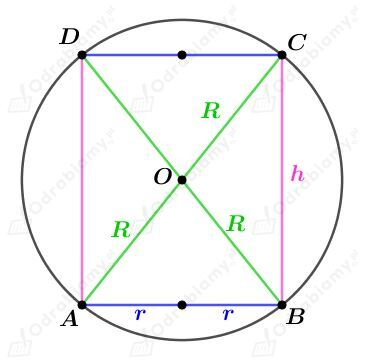
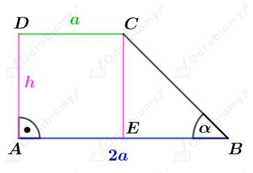
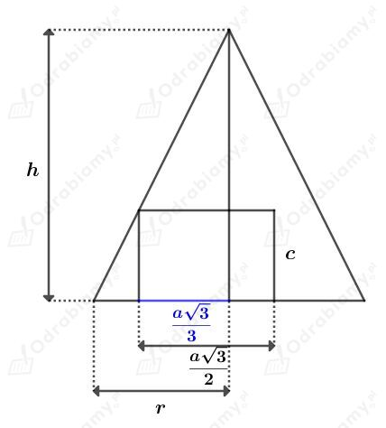
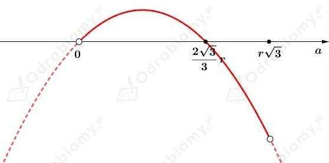
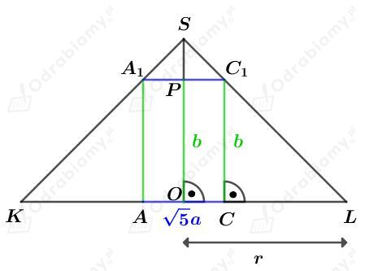
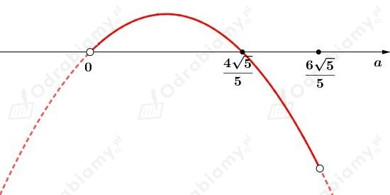
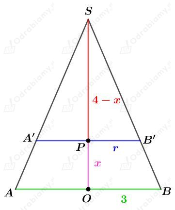
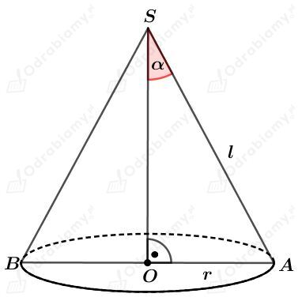

Dana jest kula o promieniu długości 3.
Na tej kuli opisano sześcian. Długość krawędzi tego sześcianu jest równa podwojonej długości promienia tej kuli, więc jest równa 6.
Wyznaczmy objętość tego sześcianu. Mamy:
W daną kulę wpisano sześcian o krawędzi długości a. Skoro promień tej kuli ma długość 3, to przekątna tego sześcianu ma długość 6. Korzystając ze wzoru na długość przekątnej sześcianu mamy:
Wyznaczmy objętość tego sześcianu. Mamy:
Wyznaczmy różnicę tych objętości. Mamy:
Kulę o promieniu długości R opisano na walcu o promieniu podstawy długości r i wysokości długości h.
Rysunek:

Z treści zadania wiemy, że średnica podstawy tego walca jest równa połowie jego wysokości. Mamy stąd:
Objętość walca wynosi 32𝜋. Mamy stąd:
Zatem mamy również:
Korzystając z twierdzenia Pitagorasa dla trójkąta ABC mamy:
Wyznaczmy objętość podanej kuli. Mamy:
Rysunek:

Wyznaczmy tangens kąta 𝛼. Mamy:
Trapez ABCD obracamy wokół ramienia AD. Otrzymujemy wtedy stożek ścięty o promieniach podstaw długości 2a i a oraz wysokości długości h.
Wyznaczmy objętość tego stożka ściętego. Korzystając ze wzoru na objętość stożka ściętego mamy:
Dany jest stożek o promieniu podstawy długości r i wysokości długości h.
W ten stożek wpisano graniastosłup prawidłowy trójkątny o krawędzi podstawy a i wysokości długości c.
Naszkicujmy przekrój przechodzący przez wysokość trójkąta równobocznego będącego podstawą tego graniastosłupa:

Korzystając z podobieństwa trójkątów mamy:
Założenia:
zatem
Wyznaczmy objętość tego graniastosłupa jako funkcję zmiennej a. Mamy:
Wyznaczmy pochodną funkcji V. Mamy:
Wyznaczmy miejsce zerowe pochodnej V'. Mamy:
Z otrzymanych liczb, tylko druga liczba należy do dziedziny rozważanej funkcji.
Naszkicujmy przybliżony wykres pochodnej:

Zauważmy, że
oraz
zatem
oraz
Czyli dany graniastosłup ma największą objętość dla
Wyznaczmy objętość takiego graniastosłupa. Mamy:
Dany jest stożek o promieniu podstawy długości r, którego przekrój osiowy jest trójkątem równobocznym o boku długości 2r.
W dany stożek wpisano prostopadłościan, w którym krawędzie podstawy mają długość a i 2a oraz o wysokości długości b.
Wyznaczmy długość przekątnej c tego prostopadłościanu. Korzystając z twierdzenia Pitagorasa mamy:
Naszkicujmy przekrój przechodzący przez przekątną podstawy prostopadłościanu. Mamy:

Pole trójkąta równobocznego KLS wynosi 9√3. Korzystając ze wzoru na pole trójkąta równobocznego mamy:
Wyznaczmy długość odcinka OS. Korzystając ze wzoru na długość wysokości trójkąta równobocznego mamy:
Trójkąt A1C1S jest trójkątem równobocznym. Korzystając ze wzoru na długość wysokości trójkąta równobocznego mamy:
Wyznaczmy długość wysokości prostopadłościanu. Mamy:
Założenia:
Zatem
Wyznaczmy objętość tego prostopadłościanu jako funkcję zmiennej a. Mamy:
Wyznaczmy pochodną funkcji V. Mamy:
Wyznaczmy miejsce zerowe pochodnej V'. Mamy:
Z otrzymanych liczb, tylko druga liczba należy do dziedziny rozważanej funkcji.
Naszkicujmy przybliżony wykres pochodnej:

Zauważmy, że
oraz
Zatem
oraz
Zatem objętość tego prostopadłościanu jest największa dla
Wyznaczmy objętość takiego prostopadłościanu. Mamy:
Dany jest stożek o promieniu podstawy długości 3 i wysokości długości 4. Stożek ten przecięto płaszczyzną równoległą do podstawy.
Otrzymany przekrój jest kołem o promieniu długości r.
Rysunek:

Z treści zadania wiemy, że pole koła będącego danym przekrojem wynosi 4𝜋. Mamy stąd:
Korzystając z podobieństwa trójkątów OBS i PB'S otrzymujemy:
Wyznaczmy objętość stożka nad płaszczyzną przekroju. Mamy:
Wyznaczmy objętość stożka pod płaszczyzną przekroju. Mamy:
Rysunek:

Z treści zadania wiemy, że pole powierzchni bocznej tego stożka stanowi 2/3 jego pola powierzchni całkowitej. Zapiszemy więc:
Wyznaczmy pole powierzchni całkowitej stożka. Mamy:
Z drugiej strony mamy:
Więc otrzymujemy równanie:
Wyznaczmy sinus kąta 𝛼. Mamy:
zatem:
Dany jest prostopadłościan o wymiarach 6 x 8 x 24.
Wyznaczmy długość przekątnej d tego prostopadłościanu. Mamy:
Na tym prostopadłościanie opisano kulę o promieniu długości R.
Długość promienia R stanowi połowę długości przekątnej tego prostopadłościanu. Zatem
Dany jest prostopadłościan o wymiarach 6 x 8 x 24.
Wyznaczmy długość przekątnej d tego prostopadłościanu. Mamy:
Wyznaczmy długość przekątnej e ściany będącej prostokątem o wymiarach 8 x 24. Mamy:
Wybieramy losowo dwa wierzchołki tego prostopadłościanu. Mamy zatem:
Niech A będzie zdarzeniem polegającym na tym, że dwa losowo wybrane punkty są końcami odcinka o długości większej od 25.
Zatem te odcinki to przekątne prostopadłościanu albo przekątne ściany o wymiarach 8 x 24. Mamy stąd:
Wyznaczmy prawdopodobieństwo zdarzenia A. Mamy: